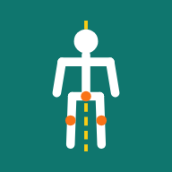

人體姿勢分析器
人體姿勢分析器
EN
💬
⚙
① 受測者
② 測試項目
③ 環境設定
④ 進行測試
⑤ 結果
⑥ 參考資料
＋ 新增受測者
編號 *
姓名
性別
男
女
其他
出生日期
身高 (cm) *
體重 (kg)
慣用側
右
左
備註（運動項目、傷病史等）
儲存並選擇
取消
刪除
歷史紀錄
靜態姿勢（四面）
倒數秒數
記錄秒數
對位完成自動倒數
舉手手勢觸發拍照
語音提示
簡易（短指令）
完整（詳細說明）
AROM 關節活動度
全選
全不選
相機
開啟相機
自動（前/後鏡頭）
🔄 切換鏡頭
鏡像：關
地面 A4 紙（井字框）
井字框：關
調整井字框
重設井字框
鉛垂校正
感測器鉛垂
手動鉛垂
取消鉛垂
顯示
軌跡：關
開始姿勢拍攝（四面）
開始 AROM 測試
▶ 開始 PROM
開啟相機
立即拍攝
重拍
下一個
停止
⚡ 痛
語音指令：關
語音：簡易
靜態姿勢（四面）
AROM 關節活動度
儲存本次
下載四面照片
HTML/PDF 報告
下載 CSV
下載影片
設為 0° 基準
清除基準
進階：記錄期間的變化曲線（研究用）
方向
變數
比較模式
無
左右疊圖
前後測疊圖
多日趨勢
下載圖表 PNG
HTML/PDF 報告
下載 CSV
下載影片
左右差異
進階：動作過程角度曲線
動作
下載圖表 PNG
重新下載
設定
語言
中文
English
模型
heavy（最準）
full
lite（最快）
鏡頭
後鏡頭
前鏡頭
解析度
480p
720p
1080p
運算方式
GPU（快）
CPU（穩定）
錄影格式
自動
WebM (VP8)
MP4 (H.264)
不錄影
可信度閾值
前鏡頭鏡像修正
CSV 含原始 33 點座標
判定閾值 (JSON)
儲存設定
還原預設閾值
登出
還原安全模式設定
回饋與問題回報
類別
問題回報（壞掉、卡住、錯誤）
量測不準
功能建議
其他
內容
附上目前的相機畫面
送出
取消